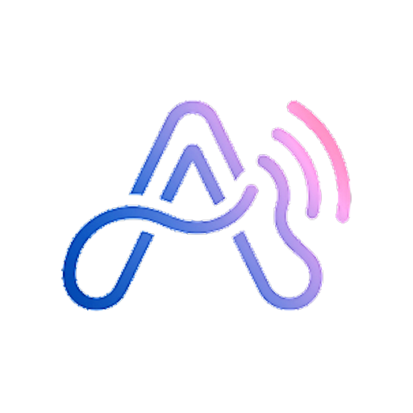

AURA Engine • Phase 1 Active

Home
Spatial Audio Enabled
Good evening, Alexandre

Curated Master
Dolby Atmos
graphic_eq 24-bit / 192kHz Lossless
Resonance (Spatial Remaster)
Kaelen Vance • Continuous Fluid Mix
Recently Played
Pick up where your vibe left off
play_arrow

play_arrow

play_arrow

play_arrow
Your Soundscapes
Tuned specifically to your bio-rhythm
psychology
32 tracks
Deep Focus
Spatial binaural drones
directions_car
48 tracks
Neon Highways
Midnight outrun bass
water_drop
19 tracks
Velvet Tide
Ambient cello & piano
wb_twilight
54 tracks
Solar Ascent
Uplifting organic textures
Audiophile Queue
Studio 192kHz flac streams
volume_up
Resonance
HI-RES
Kaelen Vance • Continuum
5:42
Outrun Eclipse
96k
Cyberwave Synth • Neon Horizons
4:18
Corona Radiance
FLAC
Lyra Bloom • Solar Flare
6:04
Obsidian Mist
HI-RES
Nocturne Echo • Velvet Eclipse
3:55
spatial_audio_off
Lossless Audio Engine
DAC Output: Bit-Perfect 192kHz


Now Playing
Playing from Album
Resonance

24-BIT / 96kHZ LOSSLESS
spatial_audio
Spatial
Resonance
Kaelen Vance
2:48
graphic_eq
-1:54
Up Next
Ethereal Drift • Solar Flare
arrow_forward
Live Lyrics

Resonance
LIVE SYNC
Kaelen Vance
Fractured starlight pulls the gravity away
Before the silence broke, you spoke in oscillations
auto_awesome
Vocal Chorus • Verse II
02:48
We dissolve into the cosmic frequencies, chasing light through the violet storm.
Echoes bounce against the event horizon
Feel the pulse beneath the static sky
Hold the silence before the drop rewrites the night
Resonance in our veins, timeless and unbroken
Take me where the soundwaves bleed into starlight
spatial_audio_off
AURA SoundStage Pro • Spatial 3D
02:48
-01:54